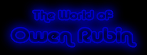

Many of
you have said in one way or another "How can I thank you for making such
great games?" Well, I have a way actually. I used to be on the Board of Directors
for the Alameda County Community Food Bank, an agency that feeds over 800,000
meals to hungry people every month, but they are only scratching the surface
of the problem. And with the tight economy, more people losing their jobs
every day, and many people donating to the other world disaster causes instead
of local charities, they are receiving less money than expected and needing
to feed more and more people every month.
If you want to thank me, do so by making a tax deductible donation to this
food bank. You can find their site at: http://www.accfb.org/donate.html.
There is a link to an online secure page for donating via Visa, or you can
send a check if this makes you nervous. I personally do not see any of this
money, it all goes to a good cause to feed hungry people. Please, consider
helping those less fortunate than us, and do let me know if you make a donation
so I can personally thank you as well. (You can do this online by selecting
the box that says "My donation is a tribute to someone special" and putting
my name in there, or write "Requested by Owen Rubin" on your check. Again,
it just tells the food bank that you are donating at my request so they can
tell me you did that.) Thanks again for all your continued support for my old
games, and in return for the donations, I will continue to personally answer
email questions from any of you as quickly as possible as my way of saying
thank you.
-Owen-
|